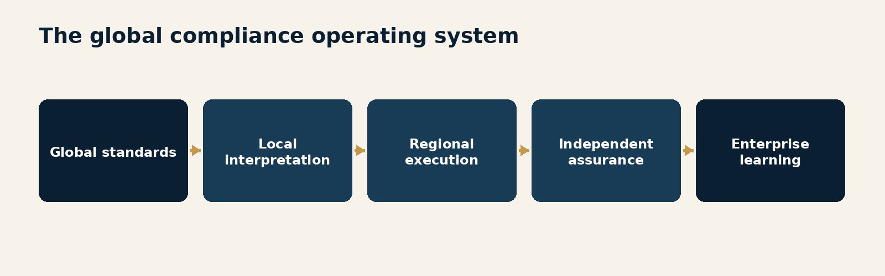
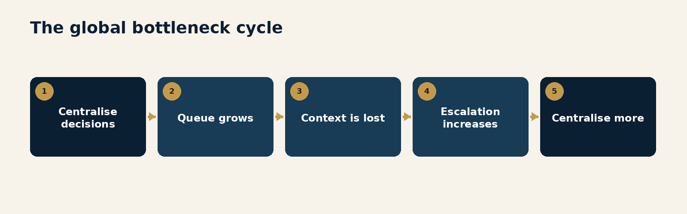
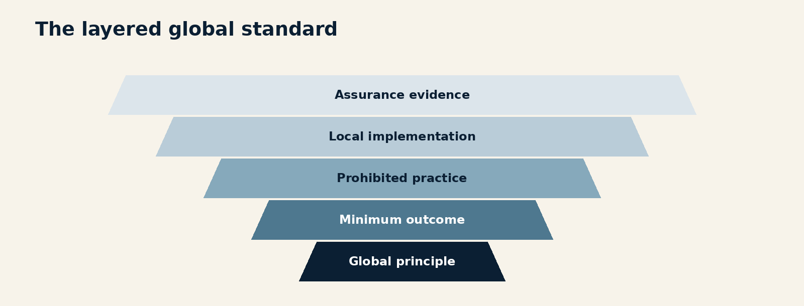
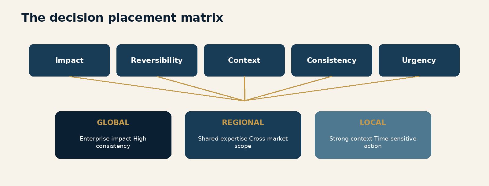
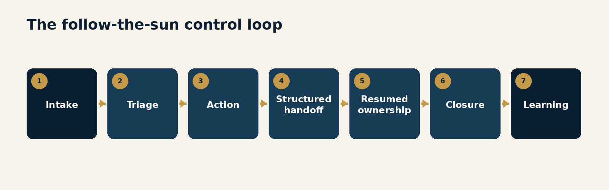
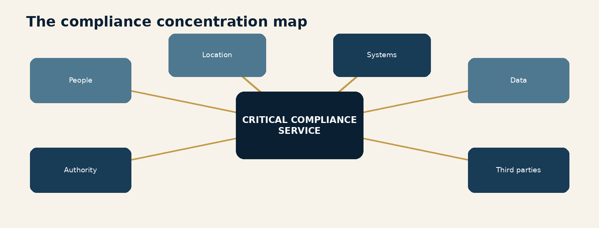
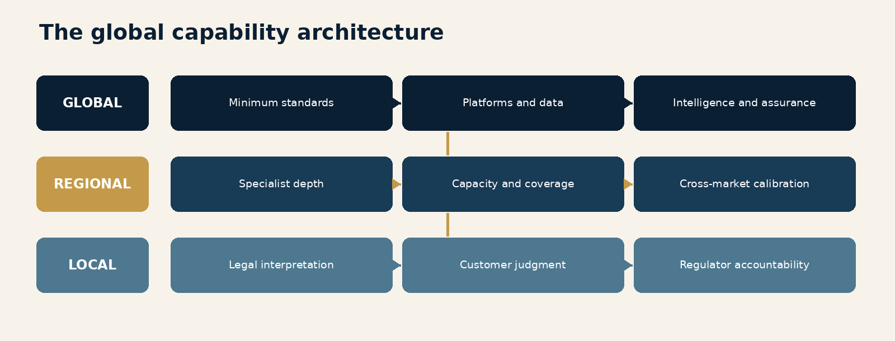
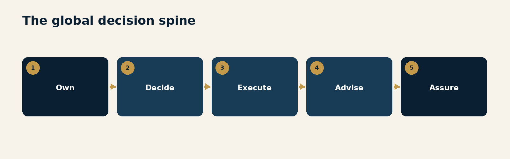
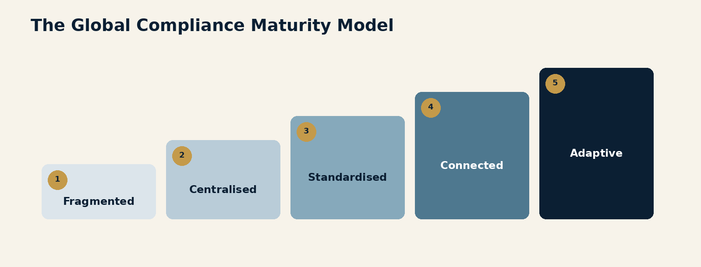

Foreword
Global compliance organisations are usually built in response to success.
The business enters more markets. Customer volumes rise. Products multiply. Regulators expect stronger local accountability. Financial-crime risks cross borders faster than the organisational chart does. What began as one team in one location becomes a network of legal-entity officers, operations centres, subject-matter specialists, investigators, policy teams, testing functions, data teams and regional leaders.
Then an understandable instinct appears.
Centralise.
Centralisation promises consistency. One policy. One interpretation. One approval point. One set of metrics. One senior leader who can tell the board that the programme is controlled.
Some centralisation is essential.
Global firms need minimum standards, common risk language, shared data, independent escalation and a way to see risk across entities. FATF requires financial groups to implement group-wide AML/CFT programmes. The US Federal Reserve expects large organisations with complex profiles to address compliance risks that transcend businesses, legal entities and jurisdictions. European rules increasingly emphasise consistent group-wide controls.
The problem begins when a requirement for global oversight becomes an assumption that every material decision should travel to the centre.
That model scales beautifully in PowerPoint.
In production, it creates a queue.
The central team becomes the place where policy interpretation, customer exceptions, product approvals, transaction escalations, regulatory questions and hiring decisions accumulate. Local teams learn to forward rather than decide. Senior specialists spend their days resolving issues that could have been handled closer to the facts. Time zones turn a two-hour question into a two-day exchange. The global function becomes both indispensable and exhausted.
The irony is hard to miss.
An organisation created to manage risk becomes a source of operational risk.
I have spent years building and leading large compliance teams across regions, time zones and regulatory environments. The strongest lesson is not that centralisation is wrong or decentralisation is right. It is that each decision needs a deliberate home.
Some decisions must be global because inconsistency would create unacceptable risk: risk appetite, minimum controls, enterprise typologies, data standards, model governance, sanctions policy and material regulatory escalation.
Some decisions should be regional because expertise, language, coverage and operating scale are shared across nearby markets.
Some decisions must be local because the relevant licence, regulator, customer practice, document, language or market condition is local.
And some activities should follow the sun because customers, transactions and incidents do not agree to wait until headquarters has had coffee.
The design challenge is to connect these layers without turning every connection into an approval.

This is more than organisation design.
It affects customer experience, regulatory credibility, operational resilience, employee development and the institution's ability to learn. A local team without authority cannot respond to its regulator. A global team without local intelligence cannot set a credible standard. An operations centre without context may process work but miss the risk. A programme without common evidence cannot tell whether any of it is working.
The central proposition of this volume is simple:
Global compliance should centralise standards, intelligence and assurance while distributing informed execution and clearly bounded decisions.
The goal is one accountable system.
It is not one enormous queue.
Introduction
The Scale Paradox
Growth produces a compliance paradox.
The larger and more international the institution becomes, the more it needs consistent governance.
It also becomes less realistic for one team to understand every customer, regulation, language, product and operational condition well enough to make every decision.
Weak programmes respond to the first fact and ignore the second. They centralise authority until the central team is operating outside its knowledge.
Fragmented programmes respond to the second and ignore the first. They distribute authority until each market becomes its own compliance republic, complete with local customs, local spreadsheets and a surprising number of definitions for the word "high risk."
Neither model is genuinely global.
A global programme is not a collection of country programmes wearing the same logo.
It is also not a headquarters programme translated into several languages.
It is a connected operating system that distinguishes what must be common from what must be contextual.
Regulatory standards point in the same direction.
FATF Recommendation 18 expects group-wide AML/CFT programmes, including information-sharing policies. FATF's risk-based approach also requires institutions to identify and understand the risks to which they are exposed and apply mitigation proportionately. Consistency and proportionality must therefore coexist.
The Federal Reserve's firmwide compliance guidance does not prescribe one organisational chart. It expects effective enterprise oversight and firmwide standards while recognising that implementation depends on scope, complexity, geographic reach and risk. It also observes that compliance is more effective when corporate and business-line staff maintain strong working relationships.
The Basel Core Principles similarly recognise that compliance staff may sit in business units or local subsidiaries, provided independence and access are preserved. The European Banking Authority requires clear decision-making, allocation of responsibilities and group-level AML/CFT governance. The EU's new AML framework combines harmonised group-wide expectations with explicit treatment of third-country legal constraints.
The direction is not "everything at headquarters."
It is accountable coordination.
Five design problems sit underneath the organisation chart
First, standard design. Which controls must be identical everywhere, and which should be expressed as an outcome that permits local implementation?
Second, decision placement. Who may decide, within what limits, using what evidence, and who can override?
Third, work distribution. Which activities benefit from global scale, regional expertise, local proximity or follow-the-sun execution?
Fourth, resilience. What happens when a location, vendor, system, data route or leadership team becomes unavailable?
Fifth, learning. How does a local regulatory issue, investigation or customer pattern become useful intelligence for the rest of the enterprise?
These are connected.
A global standard without decision rights creates escalation.
Decision rights without evidence create inconsistency.
Distributed operations without handoff discipline create rework.
Resilience without skills duplication creates an empty alternate site.
Learning without governance creates a newsletter.
The operating model developed in this volume is based on several principles:
global standards should define outcomes, minimum controls and prohibited practices;
local teams should own legal interpretation and customer-context decisions within clear boundaries;
regional teams should aggregate expertise and provide operating leverage where markets share needs;
global centres should own capabilities that genuinely benefit from scale, independence or enterprise visibility;
work should move across time zones only when evidence, accountability and handoff quality move with it;
no critical compliance service should depend on one location, one person or one inaccessible dataset;
escalation should be reserved for uncertainty, materiality or genuine conflict, not used as the default workflow;
assurance should test outcomes across locations rather than rewarding procedural sameness; and
lessons should travel faster than problems.
This volume is not an argument for pushing work to lower-cost locations.
Labour economics matter, but they are not the operating model.
A global team creates value through coverage, language, talent, proximity, resilience and specialised expertise. If a location exists only because its cost per employee is lower, the organisation will treat it as a factory. It will receive tasks but not authority, training but not careers, metrics but not context.
That is not globalisation.
It is centralisation with a longer flight.
The following chapters move from the false comfort of headquarters control to the design of a genuinely connected organisation. They address standards, local judgment, follow-the-sun operations, concentration risk, capability placement, governance speed and maturity.
The test throughout is practical:
Can the institution make a sound, explainable and timely decision close enough to the facts, while still operating as one accountable enterprise?
If the answer is yes, global compliance becomes a strategic capability.
If the answer is no, the organisation may be global.
The queue certainly is.
The Headquarters Fallacy
Central oversight creates value when it sees across the enterprise. It creates delay when it insists on deciding what it cannot see.
EXECUTIVE INSIGHT: The first global operating-model error is to confuse control with physical or organisational proximity to headquarters.
Why centralisation feels safe
Centralisation has a powerful logic.
One team can own policy interpretation. Similar cases can receive similar outcomes. Scarce specialists can be pooled. Senior leaders can see the programme. Regulators and auditors have a clear point of contact. Common systems and metrics become easier to establish.
In the early stages of growth, these advantages are real.
A small group operating in a few markets may reasonably rely on a central team. Work volumes are manageable. Senior experts can stay close to decisions. Customer and product variation remains understandable. The team can speak frequently enough that informal context compensates for weak structure.
Then scale changes the economics.
New markets add regulatory variation. More customers add edge cases. New products add dependencies. More legal entities add formal accountability. Time zones add latency. Central specialists receive more requests while moving further from the facts.
The model does not fail dramatically.
It becomes slower one escalation at a time.
The bottleneck is a system, not a busy person
Leaders often describe the problem as capacity.
"The global team needs more people."
Sometimes it does.
But a bottleneck is usually produced by design:
local teams are not authorised to decide;
standards do not explain where judgment is permitted;
central experts receive incomplete cases;
they request more information;
the local team waits across a time-zone boundary;
the customer, product team or regulator asks for an update;
the issue is escalated again because it is now urgent; and
leadership responds by requiring even more central oversight.

The cycle is self-reinforcing.
Delay is interpreted as evidence that local teams cannot manage the issue. Yet local teams have often been prevented from developing the judgment, data access and accountability required to manage it.
The centre becomes more experienced because it receives every difficult decision.
The edge remains less experienced because it receives none.
Control is not the same as approval
A controlled process has:
a defined objective;
clear decision rights;
qualified decision-makers;
required evidence;
limits and prohibited outcomes;
monitoring;
escalation triggers;
independent review; and
consequences for decisions outside authority.
None of those elements inherently requires central approval.
A local compliance officer can operate within a global standard, apply local law, document the decision and be subject to enterprise assurance. A regional investigations leader can allocate cases across markets under common severity rules. A global sanctions team can set policy while local operations execute and escalate defined exceptions.
The centre retains control by designing the system and seeing its outcomes.
Approval is only one control mechanism.
Used selectively, it is valuable.
Used universally, it is a queue with a governance label.
Headquarters has its own blind spots
The centre may have enterprise visibility, but it can lack market visibility.
A document that appears unusual globally may be normal locally. A common retail address may reflect a market where many small merchants share one commercial location. A proof-of-address requirement that works in one country may be irrelevant in another. A customer communication that seems evasive in translation may be routine in the original language. A locally common ownership structure may look exotic to a reviewer elsewhere.
This does not mean local judgment is automatically correct.
Local teams can become too close to revenue, accustomed to weak practices or reluctant to challenge familiar customers. They may normalise local risk or interpret every difference as a special case.
The answer is not to choose which side is always right.
It is to combine perspectives deliberately.
Global teams contribute consistency, cross-market intelligence and independence.
Local teams contribute law, language, customer practice and regulatory context.
The decision should specify which perspective owns which question.
The centre should own enterprise questions
Central authority is strongest where the question is genuinely enterprise-wide.
Examples include:
group risk appetite;
minimum customer and transaction controls;
sanctions and prohibited-country policy;
enterprise typologies and network intelligence;
model inventory and validation standards;
data definitions and evidence retention;
common case severity;
material regulatory escalation;
cross-entity information-sharing rules;
independent quality assurance and testing; and
the design of the global compliance operating model itself.
The centre should also intervene where a local decision could create material risk for other entities or the enterprise.
That is different from reviewing every case above an arbitrary dollar amount.
The centre needs service standards too
If local teams must use a central capability, the central team should have an explicit service obligation.
For each central service, define:
eligible requests;
information required at intake;
severity levels;
decision owner;
expected response time;
time-zone coverage;
escalation path;
evidence returned;
customer-impact tolerance; and
feedback supplied to improve the local process.
This changes the relationship.
The central team is no longer a mysterious approval chamber. It is an accountable service with defined authority and measurable performance.
There is a modest cultural benefit too.
"Awaiting global" stops being a complete sentence.
Common failure modes
Centralising every exception because the policy does not describe local judgment.
Measuring central review quality without measuring the delay and rework it creates.
Giving local officers accountability to regulators without practical decision authority.
Assuming headquarters expertise is neutral while treating local expertise as bias.
Adding people to a central queue without changing the decisions entering it.
Using seniority as the routing rule for routine work.
Treating a global policy as proof that global control exists.
Questions for Leaders
Which decisions currently travel to the centre because of material risk, and which travel there because authority was never designed?
Where does headquarters make decisions without the strongest local evidence?
Which central approvals could become bounded local decisions with monitoring and assurance?
What service levels apply when local teams depend on a central function?
Does each regulated local officer have authority proportionate to the accountability attached to the role?
One Standard Does Not Mean One Process
Global consistency should mean equivalent control outcomes, not identical clicks performed in every jurisdiction.
EXECUTIVE INSIGHT: A mature global standard separates non-negotiable outcomes from permitted local implementation. If it specifies every step, local variation becomes exception traffic.
The attraction of one process
One process is easy to explain.
Every customer provides the same documents. Every investigation follows the same steps. Every market uses the same risk rating. Every approval sits at the same level. Every record appears in the same system.
The model promises comparability and control.
It often delivers workarounds.
Local law may require additional information or prohibit collecting information expected elsewhere. Government registers differ. Identity documents differ. Corporate forms differ. Suspicious-transaction reporting rules differ. Data localisation or secrecy rules may limit group access. Regulators may expect a named local officer to exercise judgment that cannot be outsourced to a global committee.
The process can remain identical only by becoming wrong somewhere.
Build a standard in layers
A strong global standard has five layers.
1. Principle
The control purpose that applies everywhere.
Example: the institution must identify and understand the customer, controllers, beneficial owners and intended use of the service to a level proportionate to risk.
2. Minimum outcome
The evidence or state that must exist.
Example: ownership is traced to natural persons or an explainable permitted alternative; high-risk relationships receive enhanced review; the decision is documented and reproducible.
3. Prohibited practice
The outcomes that no local process may permit.
Example: no relationship may be approved solely because several customer-supplied documents agree; no local policy may reduce sanctions restrictions below the enterprise minimum.
4. Local implementation
The market-specific methods, documents, data sources, roles and workflow used to achieve the outcome.
5. Assurance evidence
The information required to prove the standard works: coverage, outcomes, exceptions, customer impact, quality, timeliness and findings.

This structure gives the organisation both consistency and room to comply with reality.
Minimum standards should be genuinely minimum
Many global policies are called minimum standards but contain hundreds of detailed procedural requirements.
The problem is not length.
It is the failure to distinguish purpose from method.
When every procedural choice is global, local teams must raise exceptions for ordinary market conditions. Exception committees then become the hidden local-policy process. Decisions take longer, evidence becomes fragmented and the global policy gradually fills with footnotes.
A minimum standard should be strict about:
risk outcomes;
control objectives;
mandatory data and evidence where legally possible;
prohibited relationships or practices;
authority limits;
escalation;
recordkeeping;
testing; and
reporting.
It should be deliberately flexible about implementation where several methods can produce the same controlled outcome.
Localisation requires governance
Flexibility without structure creates drift.
Each local implementation should be recorded in a controlled annex, procedure or control inventory that identifies:
the global requirement;
the local legal or market driver;
the local process;
responsible owner;
systems and data used;
decision authority;
evidence retained;
difference from the global baseline;
risk assessment;
approval and review date; and
testing method.
The local variation should not disappear inside an email exchange.
Nor should it require the entire enterprise policy to be rewritten every time a government form changes.
Equivalent does not mean weaker
Localisation is sometimes treated as a polite word for lowering the standard.
That is a governance failure.
An equivalent local control should be assessed against the control objective, not against visual similarity.
Suppose a global process expects an address-bearing bank statement. In a market where banks do not routinely provide such statements, insisting on the document may produce fabricated evidence or exclude legitimate customers. A stronger local process might use government registration, geolocation, delivery evidence, tax records, verified marketplace presence and observed payment activity.
The artefacts differ.
The confidence may be equal or better.
The test is whether the local evidence is independent, reliable, current and appropriate to the risk.
Stricter local rules need an enterprise path
Global minimums do not override stricter local obligations.
When local law or a regulator requires more, the organisation should:
identify the affected entities, products and customers;
determine whether the requirement should remain local or become an enterprise enhancement;
assess data, technology and operational impacts;
record the reason for divergence;
update training and evidence;
monitor outcomes; and
communicate any transferable lesson globally.
The existence of a stricter local control may reveal an emerging enterprise risk.
Local variation is therefore not only a compliance obligation.
It is a source of intelligence.
Data restrictions can divide the programme
Group-wide compliance depends on information sharing.
FATF treats information sharing as a cornerstone of an effective AML/CFT framework. The EU AML Regulation requires group-wide policies and relevant exchange of information. Yet privacy, secrecy, employment, data-localisation and suspicious-reporting rules may restrict what can move across borders.
The immature response is either to share everything or to share nothing.
The mature response designs information products.
For each use, define:
lawful purpose;
data elements required;
permitted recipients;
location and access controls;
retention;
aggregation or pseudonymisation;
restrictions on suspicious-reporting information;
regulator access;
alternative measures when data cannot move; and
evidence that the limitation is being managed.
AMLA's 2026 consultation on group-wide frameworks explicitly addresses third-country laws that restrict customer information sharing and proposes additional, proportionate measures.
This is an important reminder.
Global visibility is a control objective.
It is not a permission to ignore local law.
Test outcomes, not conformity theatre
Assurance should ask whether the local control achieves the standard.
It should test:
risks identified;
required parties verified;
prohibited outcomes prevented;
decisions supported by evidence;
high-risk cases escalated;
customer harm controlled;
suspicious activity detected and reported;
records reproducible; and
deficiencies corrected.
A process can match the global procedure perfectly and still be ineffective.
A different local process can be effective and well governed.
That distinction is central to adaptive compliance.
Common failure modes
Calling a detailed global procedure a minimum standard.
Requiring identical evidence in markets where the evidence does not exist or has different meaning.
Allowing local workarounds without recording the control rationale.
Treating stricter local requirements as administrative inconvenience rather than intelligence.
Measuring procedural conformity without testing risk outcomes.
Using data-protection concerns as a reason to avoid designing lawful information sharing.
Rewriting the global policy for every local process change.
Questions for Leaders
Can each global requirement be separated into principle, outcome, prohibition, implementation and evidence?
Which current global procedures create routine local exceptions?
How do we prove that a different local process achieves an equivalent or stronger outcome?
Where do data restrictions prevent enterprise visibility, and what additional measures compensate?
Which local regulatory developments should trigger reconsideration of the global standard?
Put Decisions Near the Customer
The best decision is not automatically the most senior one. It is the soundest decision made at the right level with the strongest evidence.
EXECUTIVE INSIGHT: Move decisions close enough to customers and regulators to preserve context, but surround them with enterprise standards, evidence and review.
Proximity improves some decisions
Compliance decisions are often discussed as if expertise exists on a ladder.
The higher the issue travels, the better the judgment becomes.
Seniority matters for materiality, accountability and difficult trade-offs. It does not manufacture missing context.
Local teams may understand:
the legal entity and licence;
regulatory expectations;
language and communication style;
ordinary documents and business structures;
customer behaviour in the market;
local payment rails;
common fraud patterns;
law-enforcement and financial-intelligence-unit practice; and
the commercial reality behind a transaction.
That knowledge should affect where decisions sit.
A reviewer several time zones away may be more senior and less informed.
Decision placement is a risk choice
Every material decision should be designed against five factors.
Impact
What happens if the decision is wrong?
Does it affect one case, many customers, a legal entity, a regulatory obligation or the enterprise?
Reversibility
Can the outcome be corrected?
Requesting more information is different from closing an account, filing a report, blocking property or approving a high-risk product.
Context
Where does the strongest relevant knowledge reside?
Consistency
How harmful would variation be?
Urgency
How quickly must a decision occur to protect the customer, institution or financial system?

High-impact, difficult-to-reverse and enterprise-wide decisions generally require global or senior approval.
High-context, time-sensitive and locally bounded decisions generally belong closer to the market.
Many decisions need two roles: local recommendation with global approval, or local approval with central notification and review.
The design should be explicit.
Build decision classes, not case-by-case politics
Authority should be assigned to classes of decisions.
For example:
Local authority
standard-risk customer approvals within policy;
local document and data-source interpretation;
routine regulatory responses under approved protocols;
initial suspicious-activity assessment;
market-specific training and communication;
local vendor or process incidents below materiality thresholds; and
customer corrections where no enterprise restriction applies.
Regional authority
cross-market investigations;
resource balancing among related markets;
interpretation of shared regional law or supervisory practice;
temporary operational changes within approved limits;
escalations involving several local entities; and
quality remediation affecting a regional centre.
Global authority
group risk appetite;
enterprise prohibitions;
high-risk product or market entry;
sanctions restrictions;
material model changes;
enterprise data and technology standards;
major regulatory or enforcement matters;
cross-entity information-sharing design; and
exceptions capable of setting a group precedent.
The exact categories will differ.
The discipline should not.
Authority must arrive with evidence
Distributing decision rights without improving evidence is not empowerment.
It is abandonment.
A local decision-maker needs:
current global and local policy;
relevant customer and transaction data;
cross-market intelligence where legally available;
clear risk indicators;
prior comparable decisions;
access to specialist advice;
defined documentation;
the ability to escalate; and
protection from inappropriate commercial pressure.
The evidence should be assembled before the decision, not reconstructed for audit six months later.
Guardrails make distributed authority possible
Useful guardrails include:
value, product and risk limits;
mandatory evidence;
dual approval for defined cases;
prohibited outcomes;
time-bound authority;
required notification;
post-decision sampling;
conflict-of-interest rules;
automatic escalation when several indicators combine; and
suspension of authority after repeated quality failure.
Guardrails should be visible in systems where possible.
A delegated limit written in a policy but not enforced in workflow relies on memory during the exact moment pressure is highest.
Local accountability must be real
Local compliance officers are sometimes given formal titles and regulatory accountability while substantive decisions remain elsewhere.
That creates a dangerous split.
The local officer may be expected to certify, report or answer to a board or regulator without controlling the programme, budget, staff, data or decisions.
A sound model should document:
matters the local officer owns;
matters requiring concurrence;
access to the legal-entity board;
authority to escalate independently;
influence over relevant local staff and resources;
access to group information;
rights to stop or restrict activity; and
conflicts between local and group instructions.
Where law requires local responsibility, the organisation should not treat the role as a decorative attachment to the global chart.
Regulators have a surprisingly limited appetite for learning that the accountable officer was merely copied on the email.
Calibration protects consistency
Distributed decision-making will produce variation.
The objective is not zero variation.
It is explainable variation within risk appetite.
Calibration should use:
common case studies;
anonymised real decisions;
blind review across locations;
comparison of outcomes;
discussion of uncertainty;
identification of local legal drivers;
recording of agreed precedents; and
follow-up testing.
Calibration is not training alone.
It is how the organisation learns whether the same evidence leads to materially different decisions and whether that difference is justified.
Appeals and overrides reveal the system
Track:
decisions escalated;
local decisions overturned;
central decisions corrected by local evidence;
reasons for override;
time to resolution;
customer impact;
repeat issues; and
policy or system changes produced.
A high override rate may indicate weak local capability.
It may also indicate that the standard is unclear, the evidence is uneven or the central team is applying a different risk appetite.
The metric is a question.
It is not a verdict.
Common failure modes
Delegating accountability without data, authority or protection.
Routing decisions by hierarchy rather than impact and context.
Permitting local decisions but requiring central approval for every meaningful variation.
Treating any difference in outcome as inconsistency.
Tracking local errors but not central decisions corrected by market expertise.
Building escalation paths that punish employees for using them.
Giving local officers formal responsibility without control of the relevant programme.
Questions for Leaders
Which decisions require local context strongly enough that distance reduces quality?
Are decision rights classified by impact, reversibility, context, consistency and urgency?
What evidence and system guardrails accompany delegated authority?
Can local officers independently escalate a conflict with group direction?
What do overrides reveal about capability, standards and risk appetite?
Follow the Sun Without Losing the Thread
Twenty-four-hour coverage is valuable only if the next team receives the judgment, evidence and ownership required to continue the work.
EXECUTIVE INSIGHT: Follow-the-sun operations are not three shifts sharing a queue. They are one controlled process with deliberate transfer of context and accountability.
Why follow-the-sun matters
Global finance operates continuously.
Customers apply outside headquarters hours. Payments move across time zones. Sanctions lists change. Fraud attacks concentrate where staffing is thin. Law enforcement may request urgent action. Technology incidents do not consult the holiday calendar.
A single-location model creates predictable blind periods.
Follow-the-sun operations can provide:
faster customer response;
continuous transaction and fraud coverage;
timely escalation;
reduced overnight backlog;
access to language and market expertise;
resilience during local disruption; and
a more sustainable on-call model.
The concept is appealing.
The handoff is where it either becomes a capability or an international game of telephone.
Work should move only when it is transferable
Some work transfers well across time zones:
queue triage;
structured investigation steps;
information gathering;
monitoring of active events;
screening review under common standards;
evidence preparation;
defined customer communication;
sanctions-list implementation checks;
incident tracking; and
follow-up on pre-agreed actions.
Some work does not transfer easily:
decisions dependent on local legal interpretation;
regulator communication;
interviews requiring relationship continuity;
complex customer explanations;
cases where meaning sits in language or cultural context;
highly sensitive employee matters; and
decisions whose owner must remain personally accountable.
The goal is not to move every case every eight hours.
It is to design continuous service around the work that benefits from continuity.
The handoff is a control event
Every handoff creates risk:
information may be omitted;
assumptions may become facts;
urgency may be lost;
evidence may be duplicated;
ownership may become ambiguous;
a customer may receive inconsistent instructions; or
both teams may assume the other is acting.
The handoff should therefore be designed like any other material control.

A minimum handoff record should contain:
issue and risk statement;
current owner;
customer, entity and jurisdiction;
actions completed;
evidence reviewed;
working hypothesis;
unresolved questions;
legal or policy constraints;
next required action;
deadline;
escalation status;
communication already sent; and
person accountable for final closure.
"Please pick this up" is not a control record.
It is a hope.
Preserve one owner
Work can move while accountability remains clear.
For each item, distinguish:
case owner, accountable for the final outcome;
active operator, responsible for work during the current coverage period;
specialist owner, responsible for a technical question; and
escalation owner, responsible if severity increases.
The case owner may remain in one region while operators continue defined tasks elsewhere.
Alternatively, ownership may transfer formally at each handoff.
Either model can work.
What fails is invisible shared ownership.
Use common severity and clocks
Continuous operations need common definitions.
Severity should determine:
response time;
eligible handoff;
approval level;
customer communication;
leadership notification;
legal involvement;
evidence retention; and
closure requirements.
The programme should use one clock.
A two-hour target should not pause because the work moved to another region. Nor should teams debate whether "end of day" means New York, Madrid or Singapore after the deadline has passed.
Use absolute timestamps, local-zone display and explicit service clocks.
Time zones are excellent for coverage.
They are less successful as a defence in an audit.
Quality must survive movement
Follow-the-sun design can tempt leaders to split work into narrow tasks.
Specialisation can improve efficiency, but excessive fragmentation removes judgment. One team collects data, another reviews documents, another decides, and a fourth communicates. No one sees the whole journey.
Quality controls should test:
complete case understanding;
handoff accuracy;
duplicated work;
missed deadlines;
contradictory customer requests;
decisions reversed after transfer;
cases circulating among regions;
number of handoffs before closure;
root causes of rework; and
employee ability to explain the end-to-end purpose.
The cheapest task is not always the cheapest case.
Follow-the-sun requires equal professional status
If one location is treated as the "thinking team" and another as the "night shift," the model will remain centralised.
The receiving team needs:
access to the same systems and intelligence;
authority appropriate to its work;
leaders present in its time zone;
specialist support;
participation in policy and process design;
career paths;
quality ownership;
visibility to senior leadership; and
the ability to challenge upstream decisions.
Otherwise work may move, but capability does not.
The organisation creates twenty-four-hour processing and eight-hour judgment.
Design for regional peaks, not perfect symmetry
Volumes are not equal across time zones.
Customer behaviour, payment cut-offs, reporting deadlines, holidays and attack patterns create peaks.
Staffing should reflect:
historical demand;
product and customer growth;
severity by hour;
language needs;
known deadlines;
list updates and market events;
incident history;
absence and attrition; and
credible stress scenarios.
Teams should be able to lend capacity without losing ownership of their local obligations.
This is where common skills, systems and taxonomy create operating leverage.
Measure the continuous service
Useful measures include:
time to initial action;
time in each region;
handoffs per case;
handoff completeness;
rework after handoff;
cases returned for missing context;
service-level performance by hour;
customer contacts per case;
quality by originating and receiving team;
high-severity coverage gaps; and
workload transferred during disruption.
Do not celebrate that the queue was empty at midnight if it reappeared as confusion at 8 a.m.
Common failure modes
Moving all work at shift end regardless of transferability.
Using free-text notes without required evidence or next action.
Confusing the current operator with the accountable case owner.
Applying local severity definitions to a global queue.
Creating lower-status processing centres without decision authority or careers.
Measuring throughput while ignoring handoff rework.
Assuming twenty-four-hour staffing creates operational resilience by itself.
Questions for Leaders
Which compliance services genuinely require continuous coverage?
Which work can transfer without losing material local context?
Can every active case identify its owner, current operator, next action and deadline?
How many handoffs occur before closure, and what rework do they create?
Do all regions have equal access to systems, intelligence, leadership and professional development?
Geographic Concentration Is a Compliance Risk
If one location holds the people, knowledge, access and authority required for a critical control, the organisation has not centralised efficiency. It has centralised failure.
EXECUTIVE INSIGHT: Compliance resilience should be designed around critical services, not office addresses. A second site is not a backup if it cannot actually decide or operate.
Concentration hides inside normal operations
Compliance leaders usually recognise technology concentration.
One screening vendor, cloud provider, case-management system or data source can create material dependency. DORA, the Basel Committee and US banking agencies all emphasise third-party and operational concentration risk.
People and location concentration deserve the same discipline.
A critical service may depend on:
one operations centre;
one language team;
one senior approver;
one group of investigators;
one data route;
one location with system credentials;
one vendor support region;
one building;
one regulator-facing officer; or
one employee who understands the workaround everyone insists is temporary.
The service may appear global because customers in many markets use it.
Its failure point may be remarkably local.
Start with critical compliance services
Operational resilience frameworks focus on the ability to deliver critical operations through disruption. The FCA requires firms in scope to identify important business services, set impact tolerances, map dependencies and test severe but plausible scenarios. Basel defines operational resilience as the ability to deliver critical operations through disruption.
Those principles can be applied to compliance services.
Examples include:
sanctions screening and interdiction;
suspicious-activity escalation and reporting;
urgent fraud response;
high-risk customer approval;
regulatory incident notification;
law-enforcement response;
customer account restriction and release;
transaction-monitoring investigation;
critical list and rule updates;
model or data incident response; and
access to customer and transaction evidence.
For each service, define the maximum tolerable disruption and the harm that occurs if it is unavailable.
The tolerance may be measured in minutes, hours or days.
Not everything is urgent.
Pretending everything is critical ensures that nothing is designed properly.
Map the real dependency chain
Organisation charts do not show resilience.
Service maps should identify:
people and skills;
decision authority;
legal-entity accountability;
offices and remote access;
systems;
data sources and locations;
vendors and subcontractors;
communications channels;
required approvals;
local regulatory deadlines;
facilities and utilities; and
upstream and downstream teams.

The map should show where several dependencies converge.
Two operations centres may both use one identity provider. Three regional teams may depend on one global approver. A backup vendor may receive data through the same route as the primary. Remote-work plans may fail if only office devices can access a government portal.
Redundancy that shares the same failure is decoration.
Geographic diversity must include capability
Opening a second location does not create resilience if it lacks:
trained staff;
current procedures;
production access;
legal authority;
leadership;
specialist support;
adequate capacity;
data visibility;
regulator or partner contacts; and
permission to act during disruption.
The alternate team should regularly perform live work.
Cold standby is fragile because systems change, credentials expire, people leave and confidence fades. A team that has not handled the service for a year is not a backup. It is an audience for the incident.
Active-active or active-warm models are stronger:
both locations process part of the normal workload;
skills are routinely exercised;
access is tested;
procedures remain current;
volume can shift under defined triggers; and
leaders know how to assume control.
Resilience and local accountability can conflict
Some activities cannot simply move.
Local law may require processing in country, restrict data access or assign responsibilities to a named officer. Suspicious-transaction information may have special confidentiality. A regulator may require local books and records. Language and legal interpretation may be inseparable from the decision.
Resilience then requires a more tailored design:
multiple qualified staff in country;
alternate local premises or remote access;
succession for the accountable officer;
segregated but duplicated systems;
pre-agreed external support;
local incident protocols;
minimum data products available to the group; and
additional enterprise monitoring where work cannot move.
Global resilience cannot be achieved by violating the local rule that created the service.
Leadership concentration matters
Operational plans often duplicate analysts and ignore decision-makers.
If one executive must approve every material customer restriction, regulatory notification or model fallback, the service still has one failure point.
Leadership resilience should define:
delegated authority during absence;
succession;
secondary regulator contacts;
emergency committees;
decision limits;
how conflicts are resolved;
access to boards and senior management; and
how authority transfers across regions.
Delegation should be exercised before an incident.
An emergency is a poor time to discover that nobody is sure whether the deputy may actually decide.
Talent concentration creates slower failure
Not all concentration produces an outage.
Some produces gradual weakness.
One location may hold all model expertise, sanctions knowledge, complex-investigation skill or regulatory history. Attrition, labour-market change or rapid growth can then reduce quality across the enterprise.
Track:
critical skills by location;
single-person dependencies;
time to proficiency;
attrition and internal mobility;
leadership bench;
language coverage;
cross-training completion;
ability to perform work outside the primary region; and
unresolved hiring risk.
Knowledge should be moved through work, not only documents.
Rotations, joint investigations, paired ownership, calibration and temporary assignments create stronger transfer than a folder called "Knowledge Base Final v7."
Test severe but plausible scenarios
Useful scenarios include:
loss of a primary office for several days;
regional internet or power disruption;
political instability or transport restrictions;
abrupt vendor outage;
data-access failure;
cyber compromise of one identity domain;
sudden loss of a leadership team;
local government portal unavailability;
volume surge combined with staff absence;
simultaneous sanctions and fraud event; and
legal restriction on cross-border data movement.
Testing should prove:
the service remains within tolerance;
authority transfers;
access works;
data remains available;
communications are coherent;
customer harm is managed;
regulatory obligations are met; and
lessons become funded remediation.
The exercise should not end when the slide deck says "success."
It should end when the weakness has an owner.
Common failure modes
Treating location diversity as a property of headcount rather than capability.
Naming a backup site that does not perform live work.
Mapping systems without mapping authority, skills and data access.
Duplicating operations while retaining one global approver.
Moving regulated work without assessing local legal restrictions.
Running resilience tests that avoid the most inconvenient dependency.
Documenting knowledge without exercising it across teams.
Questions for Leaders
Which compliance services have explicit impact tolerances?
Where do people, authority, data and systems converge in one location?
Can an alternate team perform the service today with production access and legal authority?
Which capabilities depend on one person or one regional talent market?
When did a resilience test last produce a funded change?
Centralise Capabilities, Not Every Decision
Scale is created by sharing what benefits from scale. It is destroyed by forcing context-dependent work through the same centre.
EXECUTIVE INSIGHT: The most effective global organisations centralise platforms, intelligence and assurance; federate judgment where customer, market or legal context materially improves the decision.
Stop asking whether compliance should be centralised
The question is too broad.
Compliance contains many different capabilities:
policy;
legal interpretation;
customer due diligence;
investigations;
sanctions;
fraud;
regulatory engagement;
monitoring;
data;
technology;
model management;
training;
quality assurance;
testing;
reporting;
programme management; and
operations.
Each has different economics and control needs.
The useful question is:
Where should each capability be designed, operated, decided and assured?
Those four verbs may have different answers.
Four tests for capability placement
1. Scale
Does pooling the capability reduce duplication or increase specialist depth?
2. Context
Does performance depend materially on local law, language, customer behaviour or regulator relationship?
3. Independence
Must the capability be separated from local or commercial influence?
4. Connectivity
Does the capability create more value when it can see across entities, products or markets?
Capabilities high in scale, independence and connectivity usually belong globally.
Capabilities high in context usually require local ownership or strong local participation.
Regional structures are valuable when context is shared across a group of markets and global scale would be too distant.
What usually benefits from global ownership
Common candidates include:
enterprise risk appetite;
minimum standards;
sanctions policy and list governance;
common data definitions;
core compliance platforms;
network and typology intelligence;
model governance;
enterprise reporting;
independent testing methodology;
global training architecture;
major-vendor governance;
programme management; and
cross-entity issue management.
Global ownership does not mean every employee sits in one place.
A global capability can be distributed across several regions under one design, leader and evidence model.
This is often the strongest approach: centralised accountability, geographically distributed expertise.
What usually requires local ownership
Common candidates include:
legal-entity regulatory engagement;
local legal interpretation;
suspicious-reporting decisions where law assigns local responsibility;
local board reporting;
regulator examinations;
market-specific customer evidence;
country licensing;
local conduct and consumer obligations;
relationships with local FIUs and law enforcement; and
decisions where language or market practice is material.
The local function should still use global systems, intelligence and standards where legally possible.
Local ownership should not become local isolation.
The regional layer is often underdesigned
Many institutions have global and local structures but no coherent regional layer.
Regional teams can provide:
shared language and time-zone coverage;
common regulatory interpretation;
talent depth;
surge capacity;
consistent management;
calibration across similar markets;
regional investigations;
relationships with regional bodies;
translation between global standards and local practice; and
leadership closer to employees and customers.
The regional layer should have a defined purpose.
Otherwise it becomes an extra approval step between local and global teams.
No organisation has ever reduced a bottleneck by adding a scenic route.
Use a capability architecture
For each capability, assign:
design owner - sets the method or standard;
execution owner - performs the work;
decision owner - accepts the risk or determines the outcome;
assurance owner - tests effectiveness;
data owner - ensures usable evidence;
change owner - implements improvement; and
service customer - receives the output.

This prevents one of the most common design errors: assuming the team that performs the task also owns the policy, decision, data and assurance.
Separating roles can strengthen control.
Separating them without connecting evidence creates bureaucracy.
Shared services need professional ownership
Operations centres can create tremendous value.
They can standardise execution, improve coverage, build deep expertise, support follow-the-sun service and allow scarce local officers to focus on judgment and regulatory accountability.
They fail when treated as labour pools.
A mature shared service needs:
an accountable capability leader;
defined customers;
service catalogue;
entry and exit criteria;
common workflow;
authority limits;
quality ownership;
capacity planning;
skills and career paths;
resilience;
change management;
transparent cost and performance; and
a voice in control design.
The service should understand why the work exists.
Processing a customer file is not the purpose.
Reaching a reliable risk decision is.
Centres of excellence should produce reusable capability
A centre of excellence is not a collection of senior people who attend difficult meetings.
It should create assets the enterprise can reuse:
methods;
standards;
training;
data products;
analytical tools;
typologies;
testing approaches;
decision precedents;
implementation support;
specialist consultation; and
communities of practice.
Its success should be measured by capability transferred, not dependence created.
If every question still requires the centre after three years, the centre may be excellent.
The operating model is not.
Avoid the matrix becoming the work
Global organisations often rely on dual reporting.
A local compliance leader may report to a global functional leader and a local executive or board. Regional leaders may coordinate several markets without directly owning all staff. Specialists may support product teams while retaining compliance independence.
Matrices can balance expertise and accountability.
They also create ambiguity.
Clarify:
performance management;
budget control;
hiring and removal;
work prioritisation;
policy authority;
escalation;
conflict resolution;
local board access; and
who decides when global and local objectives compete.
The Federal Reserve's firmwide compliance guidance recognises dual reporting and expects minimum standards to protect independence and accountability.
The matrix should describe how decisions happen.
It should not require a meeting to interpret the matrix.
Common failure modes
Debating centralisation as one enterprise-wide choice.
Creating regional leadership without defining its distinct value.
Using shared services as labour pools rather than professional capabilities.
Building centres of excellence that retain expertise instead of distributing it.
Assigning task execution without clarifying decision and assurance ownership.
Allowing local ownership to become local data isolation.
Creating a matrix with several reporting lines and no conflict-resolution rule.
Questions for Leaders
Where should each capability be designed, executed, decided and assured?
Which activities gain genuine scale from global ownership?
Which decisions lose quality when separated from local context?
Does the regional layer add expertise and resilience or another approval?
Are shared services measured by risk outcomes and capability, not only unit cost?
Governance That Does Not Queue
Governance should resolve uncertainty and allocate authority. When it merely collects approvals, it becomes the slowest workflow in the organisation.
EXECUTIVE INSIGHT: Good governance pre-decides who may act, within what limits and using what evidence. It should make routine decisions disappear from committees.
The committee is often a symptom
Global programmes accumulate committees.
Policy committees. Customer committees. Product committees. Model committees. Issue committees. Regional committees. Legal-entity committees. Senior committees to review the output of other senior committees.
Each may have a legitimate purpose.
Together they can become the operating system.
Work slows because:
authority is unclear;
members represent functions rather than decisions;
evidence arrives late;
issues are escalated without recommendation;
meetings occur on fixed cycles;
the same matter appears at several levels;
minutes record discussion but not rationale; and
nobody can tell which committee owns the final outcome.
The problem is not that people meet.
It is that meetings compensate for missing design.
Governance should pre-decide routine judgment
The strongest governance work happens before the case.
It defines:
risk appetite;
minimum controls;
delegated authority;
materiality;
prohibited outcomes;
evidence requirements;
service levels;
conflicts;
escalation triggers;
emergency powers; and
review obligations.
Then routine matters can be decided without a committee.
Governance reserves collective attention for:
novel risks;
genuine conflicts;
material exceptions;
major incidents;
enterprise changes;
unresolved regulatory interpretation;
risk-acceptance decisions; and
repeated failure of the existing framework.
Build a decision spine
Every material decision type should identify five roles.
Own
The person accountable for the outcome and continued effectiveness.
Decide
The person or body authorised to choose the outcome.
Execute
The team that performs the action.
Advise
The specialists whose input is required or available.
Assure
The independent party that tests whether the decision process works.

One person may hold more than one role where appropriate.
But the roles should not disappear into "the committee."
Escalation needs entry criteria
An escalation should state:
decision required;
accountable owner;
deadline;
facts;
uncertainty;
relevant policy and law;
options;
recommendation;
customer and regulatory impact;
precedent risk; and
consequence of delay.
This makes the issue decidable.
It also allows the governance body to identify why the matter reached it.
If the same category escalates repeatedly, the answer is not a permanent agenda item. It is a clearer standard, different authority, better data, stronger capability or redesigned product control.
Governance should remove recurring work from governance.
Use asynchronous decisions carefully
Not every decision needs a meeting.
Structured written decisions can:
cross time zones;
preserve rationale;
give members time to review evidence;
reduce scheduling delay;
create searchable precedent; and
expose where information is incomplete.
Use a meeting when debate, conflict, ambiguity or speed requires live interaction.
Use asynchronous approval when the evidence and choices are clear.
Do not convert email silence into consent for material risk.
The process should define quorum, deadline, dissent and final authority.
Regulatory change should not become a global relay race
Global organisations can be slow to implement regulatory change because information travels sequentially:
local team identifies change;
regional team validates it;
global policy reviews it;
legal interprets it;
technology estimates it;
operations plans it;
governance approves it; and
local team returns to explain that the deadline has not moved.
A stronger model works in parallel.
The local owner records:
source and effective date;
affected entity, product and customer;
legal interpretation;
minimum required outcome;
gap;
enterprise relevance;
interim control; and
accountable change owner.
Global functions assess common impact while local implementation begins within controlled assumptions. Material conflicts escalate quickly. Reusable changes are incorporated into the global standard.
Governance needs service metrics
Measure:
time from submission to decision;
time waiting for information;
decisions by level;
matters returned as incomplete;
repeated escalations;
decision reversals;
overdue actions;
exceptions approaching expiry;
customer impact during delay;
geographic distribution of submissions;
local decisions later sampled as deficient; and
governance decisions that changed a standard, product or authority.
Committee volume is not evidence of control.
It may be evidence that the organisation has learned to turn uncertainty into calendar invitations.
Boards need a global view without losing local accountability
Group boards need enterprise risk visibility.
Legal-entity boards need credible oversight of their regulated entity.
The reporting architecture should connect them.
Local board reporting should include:
local risk profile;
performance against group standards;
material local deviations;
incidents and regulatory matters;
resource and capability;
dependencies on group services;
decisions reserved locally;
concentration and resilience; and
issues requiring group support.
Group reporting should aggregate risk without erasing the entities where obligations sit.
A green global dashboard assembled from one red and five green entities is not green.
It is averaging.
Emergency governance should already exist
Incidents compress time.
Predefine:
emergency decision-makers;
delegated limits;
alternate leaders;
local and global notification;
customer-protection authority;
temporary control changes;
documentation;
regulator engagement;
duration and expiry; and
retrospective review.
The emergency process should be exercised.
Otherwise the organisation will assemble a very senior group during the incident and spend its first hour deciding why everyone is there.
Common failure modes
Creating committees for issues caused by unclear authority.
Escalating questions without a recommendation or deadline.
Reviewing the same decision at local, regional and global forums.
Using meeting frequency as a proxy for governance effectiveness.
Allowing exceptions to continue without expiry or outcome review.
Aggregating entity reporting until material local risk disappears.
Designing emergency authority during the emergency.
Questions for Leaders
Which recurring committee items should become standards or delegated decisions?
Can each material decision identify its owner, decision-maker, executor, advisers and assurer?
How much governance time is spent waiting for information rather than resolving uncertainty?
Does group reporting preserve legal-entity risk and accountability?
When did governance last remove an approval or clarify an authority?
Build the Adaptive Global Organisation
The mature global function does not choose between consistency and speed. It designs standards, authority, data and learning so both improve together.
EXECUTIVE INSIGHT: Global compliance maturity is measured by how quickly sound local and enterprise decisions can be made, connected and improved without losing accountability.
The operating model is a learning system
An organisation chart shows reporting.
An operating model shows how value and control move.
For global compliance, it should explain:
how standards are created;
how local requirements are incorporated;
where work is performed;
where decisions sit;
how evidence is shared;
how quality is tested;
how incidents are managed;
how resources move;
how regulators and boards receive accountability; and
how lessons change the system.
The mature organisation is not permanently centralised or decentralised.
It can move authority and capacity as risk changes.
The Global Compliance Maturity Model
Organisations can assess themselves across five stages.
Stage 1: Fragmented
Markets operate independently.
Policies, systems, risk ratings and data differ. Local expertise is high but enterprise visibility is low. Similar work is duplicated. Cross-border risk is difficult to identify.
Success is measured locally.
The principal risk is that the group cannot see or control what it owns.
Stage 2: Centralised
The organisation creates global standards and concentrates approvals.
Consistency improves, but queues grow. Local teams escalate rather than decide. Headquarters becomes distant from customer and regulatory context.
Success is measured through policy adoption and central control.
The principal risk is operational bottleneck and weak local capability.
Stage 3: Standardised
Global minimum standards, common systems and data definitions are established.
Local variations are documented. Some operations are shared. Decision rights remain uneven, and regional handoffs may create rework.
Success is measured through control coverage and comparable evidence.
The principal risk is procedural uniformity without true decision design.
Stage 4: Connected
Global, regional and local roles are explicit.
Capabilities are placed using scale, context, independence and connectivity. Decisions sit near the strongest evidence. Follow-the-sun operations use controlled handoffs. Intelligence and outcomes move across the enterprise.
Success is measured through decision quality, timeliness, resilience and learning.
The principal risk is complexity if data and governance do not remain disciplined.
Stage 5: Adaptive
The organisation changes standards, authority, capacity and controls as risk evolves.
Local insight becomes global intelligence. Enterprise patterns improve local decisions. Critical services shift across regions during disruption. Governance removes recurring approvals. Talent and technology are deployed dynamically within clear accountability.
Success is measured through control effectiveness, customer trust and time from new information to better operation.
The principal risk is believing that maturity is permanent.

Build around six connected systems
1. Standards
Define global principles, minimum outcomes, prohibited practices and evidence.
Govern local implementation and stricter requirements without confusing sameness with consistency.
2. Decisions
Place authority using impact, reversibility, context, consistency and urgency.
Support delegation with evidence, limits, monitoring and escalation.
3. Capabilities
Place design, execution, decision and assurance roles deliberately.
Use global scale, regional depth and local proximity where each creates the most value.
4. Service
Treat central and shared capabilities as accountable services.
Define customers, intake, service levels, quality, capacity and outcomes.
5. Resilience
Map critical services across people, authority, location, systems, data and third parties.
Exercise alternate capability through live work and credible scenarios.
6. Learning
Turn local regulatory changes, cases, incidents, overrides and customer outcomes into enterprise improvements.
Measure whether the improvement worked.
These systems should share identifiers and evidence.
A local decision should be visible to assurance. An assurance finding should change a standard. A new standard should update workflow. Workflow outcomes should inform capacity and authority.
Without that loop, the organisation is distributed.
It is not connected.
Talent is the operating model
Global design discussions often focus on boxes, locations and cost.
Capability is created by people.
A strong talent system should include:
common role families;
local and global career paths;
technical accreditation;
leadership in every major region;
rotations;
cross-market projects;
succession;
calibration;
specialist communities;
mobility;
remote access to expertise; and
recognition for enterprise contribution.
Employees in regional centres should be able to become global capability leaders.
Local officers should be able to influence global policy.
Global specialists should spend enough time with markets to understand how the standard behaves.
Otherwise geography hardens into hierarchy.
Technology should reduce distance
Technology can connect the organisation through:
common customer and entity identifiers;
enterprise case management;
shared policy and control libraries;
decision records;
workflow-enforced authority;
collaborative investigation;
multilingual search and translation with human review;
network analytics;
service dashboards;
knowledge retrieval;
secure regional data products; and
automated evidence assembly.
Technology should not merely route more work to the centre.
An excellent global queue is still a queue.
AI and agents can help assemble local law, customer context, prior decisions and enterprise intelligence for the authorised decision-maker. They can recommend routing, identify missing evidence and prepare handoffs.
Their authority must remain governed.
The objective is to bring the institution's knowledge to the decision, not automatically bring the decision to headquarters.
The executive scorecard must change
Headcount and unit cost matter.
They do not describe the operating model.
Leaders should see:
Standards
material local deviations;
overdue standard reviews;
outcome consistency;
policy exceptions; and
time from local change to enterprise assessment.
Decisions
time to decision;
decisions by authority level;
escalation and override rates;
rework;
customer impact; and
decisions outside authority.
Service
service-level performance;
queue age by region and hour;
handoff quality;
demand and capacity;
repeat requests; and
end-to-end quality.
Resilience
single-location and single-person dependencies;
alternate capability readiness;
disruption tests;
service performance during incidents; and
unresolved concentration risk.
Talent
critical skill coverage;
attrition;
time to proficiency;
leadership succession;
internal mobility; and
cross-region development.
Learning
local lessons adopted globally;
global intelligence used locally;
recurring escalations removed;
findings that changed controls;
time from issue to remediation; and
evidence that the change improved outcomes.
Start with one service
Do not redesign the entire global organisation in one programme.
Choose one critical service such as high-risk customer approval, sanctions escalation, urgent fraud response or transaction-monitoring investigation.
Then:
define the service outcome and impact tolerance;
map demand across markets and time zones;
identify global, regional and local requirements;
separate design, execution, decision and assurance roles;
locate the strongest context and expertise;
define decision rights and evidence;
map concentration;
design handoffs and service levels;
test severe but plausible disruption;
measure quality, speed and customer impact; and
change the standard and structure based on results.
Then repeat.
This creates an operating model through evidence, not architecture theatre.
The final leadership shift
Global compliance leaders must be willing to give away decisions.
They must also be willing to retain accountability.
That is the difficult part.
Control feels tangible when a senior leader signs every approval. It feels less visible when the leader designs a system in which qualified people decide across several regions.
But the second model can be more controlled.
It exposes authority, evidence, outcomes and weakness. It builds capability. It allows the centre to focus on enterprise risk. It gives local leaders the tools and stature to meet their obligations. It makes the organisation faster without asking it to be careless.
The best global function is not the one through which every decision passes.
It is the one in which every material decision has a clear standard, a capable owner, the right evidence and an accountable path to learning.
Common failure modes
Treating the organisation chart as the operating model.
Measuring global maturity through central headcount or policy adoption.
Allowing geography to determine professional status.
Using technology to route work without improving evidence or authority.
Redesigning the whole organisation before proving one service.
Tracking cost without decision quality, resilience or customer impact.
Assuming the connected model will remain effective without continuous review.
Questions for Leaders
At which maturity stage is each critical compliance service?
Can standards, decisions, capabilities, service, resilience and learning be connected through evidence?
Which location-based structures have become unnecessary hierarchy?
What decision could move closer to the customer without exceeding risk appetite?
How quickly can a local lesson change the global system?
Toolkit
The Global Compliance Operating Model
This toolkit translates the volume's argument into six practical artefacts.
1. Global Standard Design Record
For each material standard, record:
control objective;
enterprise principle;
minimum outcome;
prohibited practices;
mandatory evidence;
decisions reserved globally;
local implementation permitted;
stricter local requirements;
cross-border data constraints;
assurance method;
owner;
approval date;
review trigger; and
version.
Test the draft with three questions:
Is it strict about outcomes and risk?
Is it unnecessarily prescriptive about method?
Can a local team explain and evidence any different implementation?
2. Decision Placement Record
For each decision class, record:
decision;
risk if wrong;
impact scope;
reversibility;
context required;
need for enterprise consistency;
urgency;
decision level;
monetary, product or risk limits;
evidence required;
prohibited outcomes;
notification;
escalation triggers;
override authority;
sample review rate; and
customer correction path.
Use one of four placements:
Global reserved
Regional delegated
Local delegated
Local or regional recommendation with global approval
3. Follow-the-Sun Handoff Record
Every transferred item should include:
case identifier;
customer, legal entity and jurisdiction;
severity;
case owner;
current operator;
risk statement;
actions completed;
evidence reviewed;
unresolved questions;
policy or legal constraints;
next action;
deadline in UTC and local display;
communication sent;
escalation status;
transfer acceptance; and
final closure owner.
Monitor:
handoffs per case;
incomplete handoffs;
rework;
cases returned;
missed clocks;
inconsistent customer requests; and
quality by originating and receiving team.
4. Compliance Concentration Assessment
For each critical service, identify:
Service
outcome;
customers and regulators affected;
maximum tolerable disruption;
peak demand;
legal deadlines.
Dependencies
people;
skills;
decision authority;
location;
systems;
data;
vendors;
facilities;
communications; and
legal constraints.
Concentration
single location;
single person;
one identity or access domain;
one data route;
one provider or subcontractor;
shared failure across primary and backup;
one local regulator contact; and
untested manual process.
Resilience
alternate location;
alternate leader;
live workload performed by backup;
production access tested;
capacity available;
local legal authority;
latest scenario;
result;
remediation owner; and
due date.
5. Capability Placement Map
For each capability, score:
scale benefit;
local context dependency;
independence requirement;
enterprise connectivity value;
resilience need;
data restriction;
scarce expertise;
customer proximity; and
regulatory accountability.
Then assign:
design owner;
execution owner;
decision owner;
assurance owner;
data owner;
change owner;
primary region;
alternate region; and
service customer.
Challenge every global placement:
Does this need one standard, or one location?
Challenge every local placement:
Does this need local ownership, or has the process simply never been connected?
6. Executive Global Operating Scorecard
Balance six categories.
Standards
outcome coverage;
material local variations;
overdue reviews;
policy exceptions;
issues caused by procedural overreach.
Decisions
time to decision;
escalation rate;
override rate;
decisions outside authority;
customer impact;
repeated decision categories.
Service
volume and capacity;
service-level performance;
queue age;
handoff quality;
end-to-end accuracy;
cost per resolved outcome.
Resilience
services with tested impact tolerances;
single-location dependencies;
alternate capability readiness;
scenario findings;
concentration remediation.
Talent
critical skills by region;
single-person dependencies;
attrition;
internal mobility;
leadership succession;
time to proficiency.
Learning
local issues assessed globally;
global intelligence adopted locally;
recurring escalations removed;
control changes from assurance;
time from insight to implementation;
outcome improvement after change.
References and Further Reading
1. Financial Action Task Force, The FATF Recommendations, updated October 2025. Official source
2. Financial Action Task Force, Guidance for a Risk-Based Approach: The Banking Sector, October 2014. Official source
3. Financial Action Task Force, Guidance on Private Sector Information Sharing, November 2017. Official source
4. Financial Action Task Force, Partnering in the Fight Against Financial Crime: Data Protection, Technology and Private Sector Information Sharing, 2022. Official source
5. European Banking Authority, Guidelines on Policies and Procedures in Relation to Compliance Management and the Role and Responsibilities of the AML/CFT Compliance Officer, June 2022. Official source
6. European Banking Authority, Final Report on Guidelines on Internal Governance under CRD, July 2021. Official source
7. European Union, Regulation (EU) 2024/1624 on the Prevention of the Use of the Financial System for the Purposes of Money Laundering or Terrorist Financing, June 2024. Official source
8. Authority for Anti-Money Laundering and Countering the Financing of Terrorism, Consultation Paper on Draft RTS under Articles 16(4) and 17 of Regulation (EU) 2024/1624, April 2026. Official source
9. Authority for Anti-Money Laundering and Countering the Financing of Terrorism, Single Programming Document 2026-2028, February 2026. Official source
10. Basel Committee on Banking Supervision, Compliance and the Compliance Function in Banks, April 2005. Official source
11. Basel Committee on Banking Supervision, Corporate Governance Principles for Banks, July 2015. Official source
12. Basel Committee on Banking Supervision, Sound Management of Risks Related to Money Laundering and Financing of Terrorism, revised July 2020. Official source
13. Basel Committee on Banking Supervision, Core Principles for Effective Banking Supervision, April 2024. Official source
14. Basel Committee on Banking Supervision, Principles for Operational Resilience, March 2021. Official source
15. Basel Committee on Banking Supervision, Principles for the Sound Management of Third-Party Risk, December 2025. Official source
16. Board of Governors of the Federal Reserve System, SR 08-8 / CA 08-11: Compliance Risk Management Programs and Oversight at Large Banking Organizations with Complex Compliance Profiles, revised October 2025. Official source
17. U.S. Department of Justice, Criminal Division, Evaluation of Corporate Compliance Programs, updated September 2024. Official source
18. U.S. Department of the Treasury, Office of Foreign Assets Control, A Framework for OFAC Compliance Commitments, May 2019. Official source
19. Financial Conduct Authority, Operational Resilience: Insights and Observations for Firms, May 2024. Official source
20. Office of the Comptroller of the Currency, Third-Party Relationships: Interagency Guidance on Risk Management, June 2023. Official source
21. European Union, Regulation (EU) 2022/2554 on Digital Operational Resilience for the Financial Sector, December 2022. Official source
About the Author
Micheal Sheehy is a global financial-services and payments compliance executive with experience leading large-scale transformation across anti-money laundering, sanctions, customer lifecycle management, fraud, transaction monitoring, data, technology and model governance.
He has built and led multi-region compliance organisations of more than 400 people, combining global standards, regional operating hubs and local regulatory accountability across complex cross-border environments.
His work focuses on the future of adaptive compliance: how financial institutions can combine better information, modern technology, accountable governance and organisational learning to improve control effectiveness while enabling responsible growth.
He is the author of The Adaptive Compliance Series.
Contact: micheal@michealsheehy.com
Website: michealsheehy.com
Continue the conversation. For speaking, media or advisory enquiries, contact Micheal.